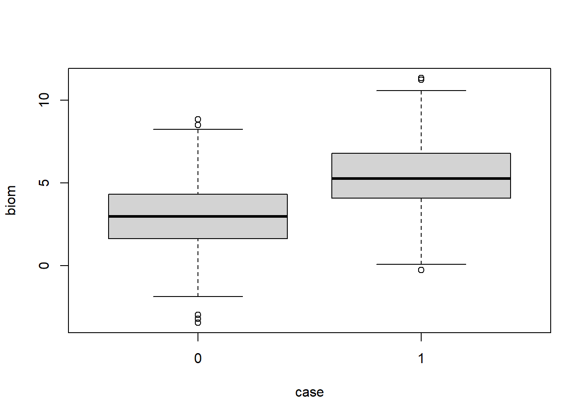

This page is part of the University of Colorado-Anschutz Medical Campus’ BIOS 6618 Recitation collection. To view other questions, you can view the BIOS 6618 Recitation collection page or use the search bar to look for keywords.
Note, this recitation was written in 2022 and packages may have changed.
R Packages for Diagnostic Testing Calculations
There are lots of packages out there that can calculate the diagnostic test summaries. Below I provide a few I use with comments about certain properties.
For illustration purposes, let’s also simulate some data for a prospective cohort study with:
200 participants who develop the condition of interest and have a baseline biomarker measure distributed \(N(\mu=5,\sigma=2)\)
800 participants who do not develop the condition of interest and have a baseline biomarker measure distributed \(N(\mu=3,\sigma=2)\)
Code
set.seed(515)# Make data set to illustrate functions belowdiag_dat <-data.frame(case =c(rep(1,200), rep(0,800)), # create variable to indicate outcome statusbiom =c(rnorm(200,5,2), rnorm(800,3,2)) # create variable for baseline biomarker measurement)
Visualizing the data, we see there is overlap in the biomarkers between groups:
Code
boxplot(biom ~ case, data=diag_dat)

We will examine the properties if we use a threshold of >4 to indicate a predicted case versus a control:
Code
# The tricky thing, as we will see below, is we want our table to be ordered similar to our notes so we need to tell R the order so it doesn't use the alpha-numeric defaulttab4 <-table(biom_gt4 =factor(diag_dat$biom>4, levels=c(T,F), labels=c(T,F)), truth =factor(diag_dat$case, levels=c(1,0), labels=c(1,0)) )tab4
truth
biom_gt4 1 0
TRUE 152 241
FALSE 48 559
In the code above we used factor to tell R the order we wanted the table’s results, so it can reflect the structure of the 2x2 table in our notes:
Case
Control
Test +
a
b
Test -
c
d
If we did not define it, we will end up with the alpha-numeric default ordering that will lead to incorrect interpretations of our summaries:
Code
# Note that if we didn't use something like factor to set the order we end up with:table(biom_gt4 = diag_dat$biom>4, case = diag_dat$case )
case
biom_gt4 0 1
FALSE 559 48
TRUE 241 152
epiR Package
I like the epiR package since it can quickly return summaries based on the provided 2x2 table with confidence intervals (epi.tests gives the diagnostic testing summaries, epi.2x2 provides the OR, RR, etc.):
Code
epiR::epi.tests(tab4)
Outcome + Outcome - Total
Test + 152 241 393
Test - 48 559 607
Total 200 800 1000
Point estimates and 95% CIs:
--------------------------------------------------------------
Apparent prevalence * 0.39 (0.36, 0.42)
True prevalence * 0.20 (0.18, 0.23)
Sensitivity * 0.76 (0.69, 0.82)
Specificity * 0.70 (0.67, 0.73)
Positive predictive value * 0.39 (0.34, 0.44)
Negative predictive value * 0.92 (0.90, 0.94)
Positive likelihood ratio 2.52 (2.21, 2.88)
Negative likelihood ratio 0.34 (0.27, 0.44)
False T+ proportion for true D- * 0.30 (0.27, 0.33)
False T- proportion for true D+ * 0.24 (0.18, 0.31)
False T+ proportion for T+ * 0.61 (0.56, 0.66)
False T- proportion for T- * 0.08 (0.06, 0.10)
Correctly classified proportion * 0.71 (0.68, 0.74)
--------------------------------------------------------------
* Exact CIs
If we investigate the names, we can also extract the specific estimates and confidence intervals of interest:
Code
# save epiR::epi.tests(tab4) as objectresR <- epiR::epi.tests(tab4)# check names for returned outputnames(resR)
statistic est lower upper
3 se 0.76 0.6946937 0.8174281
Code
# Alternative ways we could extract sensitivity## Save resR$detail as its own object to avoid lots of $'sresR_detail <- resR$detailresR_detail[ which(resR_detail$statistic =='se'), ]
statistic est lower upper
3 se 0.76 0.6946937 0.8174281
Code
## Use square brackets to pull statistic from resR$detailresR$detail[ which(resR$detail[,'statistic'] =='se'), ]
statistic est lower upper
3 se 0.76 0.6946937 0.8174281
The limitation of epi.tests is that the negative and positive predictive value summaries are based on the sample prevalence (the function output calls it the “true” prevalence: tprev). If we have a different population prevalence to use, we either have to manually extract the estimates for sensitivity and specificity to use in our formulas, or explore other functions.
NOTE: epiR updated their package so that epi.tests() uses the above approach to extract our statistic(s) of interest. In older versions, you could use something along the lines of resR$rval to produce something like resR$detail. To update to the latest version of the package, you can use install.packages('epiR') or click through options in RStudio.
caret Package
The caret package includes functions that can calculate our diagnostic summaries, while also including the population prevalence. There are also multiple ways to provide the data for the functions.
For example, to calculate our sensitivity we can either provide our 2x2 table or the vectors of our results. For the 2x2 table the rows and columns must have the same names, and for the vectors we still need to provide factors:
Code
# make table with same names for row and columntab4c <-table(biom_gt4 =factor(diag_dat$biom>4, levels=c(T,F), labels=c(1,0)), truth =factor(diag_dat$case, levels=c(1,0), labels=c(1,0)) )caret::sensitivity(tab4c)
[1] 0.76
Code
# feed in vectors of factor variables insteadcaret::sensitivity(factor(diag_dat$biom>4, levels=c(T,F), labels=c(1,0)), factor(diag_dat$case, levels=c(1,0), labels=c(1,0)))
[1] 0.76
For NPV and PPV, we can specify the prevalence (or if we leave it blank it uses the sample estimate):
Code
# Use sample prevalence to compare to epiR output abovecaret::posPredValue(tab4c, prevalence=NULL)
[1] 0.3867684
Code
# Specify population prevalence of 10%caret::posPredValue(tab4c, prevalence=0.1)
[1] 0.2189413
A downside to this approach, however, is there is no automatically provided confidence intervals. We either have to find a formula to use or implement a bootstrap resampling strategy to estimate a confidence interval.
Source Code
---title: "What Are Some R Packages for Diagnostic Testing Calculations?"author: name: Alex Kaizer roles: "Instructor" affiliation: University of Colorado-Anschutz Medical Campustoc: truetoc_float: truetoc-location: leftformat: html: code-fold: show code-overflow: wrap code-tools: true---```{r, echo=F, message=F, warning=F}library(kableExtra)library(dplyr)```This page is part of the University of Colorado-Anschutz Medical Campus' [BIOS 6618 Recitation](/recitation/index.qmd) collection. To view other questions, you can view the [BIOS 6618 Recitation](/recitation/index.qmd) collection page or use the search bar to look for keywords.*Note, this recitation was written in 2022 and packages may have changed.*# R Packages for Diagnostic Testing CalculationsThere are lots of packages out there that can calculate the diagnostic test summaries. Below I provide a few I use with comments about certain properties. For illustration purposes, let's also simulate some data for a prospective cohort study with:* 200 participants who develop the condition of interest and have a baseline biomarker measure distributed $N(\mu=5,\sigma=2)$* 800 participants who do not develop the condition of interest and have a baseline biomarker measure distributed $N(\mu=3,\sigma=2)$```{r}set.seed(515)# Make data set to illustrate functions belowdiag_dat <-data.frame(case =c(rep(1,200), rep(0,800)), # create variable to indicate outcome statusbiom =c(rnorm(200,5,2), rnorm(800,3,2)) # create variable for baseline biomarker measurement)```Visualizing the data, we see there is overlap in the biomarkers between groups:```{r}boxplot(biom ~ case, data=diag_dat)```We will examine the properties if we use a threshold of >4 to indicate a predicted case versus a control:```{r}# The tricky thing, as we will see below, is we want our table to be ordered similar to our notes so we need to tell R the order so it doesn't use the alpha-numeric defaulttab4 <-table(biom_gt4 =factor(diag_dat$biom>4, levels=c(T,F), labels=c(T,F)), truth =factor(diag_dat$case, levels=c(1,0), labels=c(1,0)) )tab4```In the code above we used `factor` to tell R the order we wanted the table's results, so it can reflect the structure of the 2x2 table in our notes:| | Case | Control ||:-------|:----:|:-------:|| **Test +** | a | b || **Test -** | c | d |If we did not define it, we will end up with the alpha-numeric default ordering that will lead to incorrect interpretations of our summaries:```{r}# Note that if we didn't use something like factor to set the order we end up with:table(biom_gt4 = diag_dat$biom>4, case = diag_dat$case )```## `epiR` PackageI like the `epiR` package since it can quickly return summaries based on the provided 2x2 table with confidence intervals (`epi.tests` gives the diagnostic testing summaries, `epi.2x2` provides the OR, RR, etc.):```{r}epiR::epi.tests(tab4)```If we investigate the names, we can also extract the specific estimates and confidence intervals of interest:```{r}# save epiR::epi.tests(tab4) as objectresR <- epiR::epi.tests(tab4)# check names for returned outputnames(resR)# see output for detailresR$detail# check object type for detailclass( resR$detail )# extract sensitivityresR$detail[ which(resR$detail$statistic =='se'), ]# Alternative ways we could extract sensitivity## Save resR$detail as its own object to avoid lots of $'sresR_detail <- resR$detailresR_detail[ which(resR_detail$statistic =='se'), ]## Use square brackets to pull statistic from resR$detailresR$detail[ which(resR$detail[,'statistic'] =='se'), ]```The limitation of `epi.tests` is that the negative and positive predictive value summaries are based on the sample prevalence (the function output calls it the "true" prevalence: `tprev`). If we have a different population prevalence to use, we either have to manually extract the estimates for sensitivity and specificity to use in our formulas, or explore other functions.**NOTE: epiR updated their package so that epi.tests() uses the above approach to extract our statistic(s) of interest.** In older versions, you could use something along the lines of `resR$rval` to produce something like `resR$detail`. To update to the latest version of the package, you can use `install.packages('epiR')` or click through options in RStudio.## `caret` PackageThe `caret` package includes functions that can calculate our diagnostic summaries, while also including the population prevalence. There are also multiple ways to provide the data for the functions.For example, to calculate our sensitivity we can either provide our 2x2 table or the vectors of our results. For the 2x2 table the rows and columns must have the same names, and for the vectors we still need to provide factors:```{r}# make table with same names for row and columntab4c <-table(biom_gt4 =factor(diag_dat$biom>4, levels=c(T,F), labels=c(1,0)), truth =factor(diag_dat$case, levels=c(1,0), labels=c(1,0)) )caret::sensitivity(tab4c)# feed in vectors of factor variables insteadcaret::sensitivity(factor(diag_dat$biom>4, levels=c(T,F), labels=c(1,0)), factor(diag_dat$case, levels=c(1,0), labels=c(1,0)))```For NPV and PPV, we can specify the prevalence (or if we leave it blank it uses the sample estimate):```{r}# Use sample prevalence to compare to epiR output abovecaret::posPredValue(tab4c, prevalence=NULL)# Specify population prevalence of 10%caret::posPredValue(tab4c, prevalence=0.1)```A downside to this approach, however, is there is no automatically provided confidence intervals. We either have to find a formula to use or implement a bootstrap resampling strategy to estimate a confidence interval.